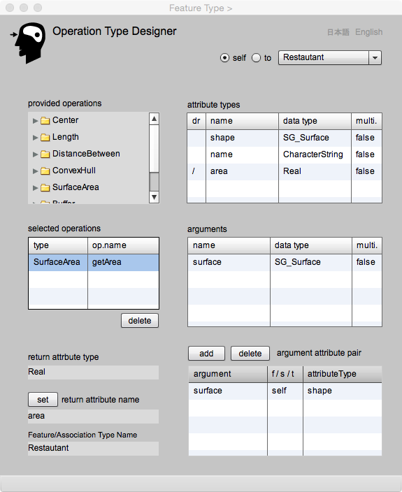

<!DOCTYPE html PUBLIC "-//W3C//DTD XHTML 1.0 Transitional//EN" "http://www.w3.org/TR/xhtml1/DTD/xhtml1-transitional.dtd">
<html xmlns="http://www.w3.org/1999/xhtml">
<head>
<meta http-equiv="Content-Type" content="text/html; charset=UTF-8" />
<title>Operation Type Designer</title>
<link href="gittokCSS.css" rel="stylesheet" type="text/css" />
</head>

<body>
<p class="FirstHeader">Operation Type Designer</p>
<p class="secondHeader">Introduction</p>
<p class="mainSentence">Operation types used in a feature type or an association type are defined in Operation Type Designer. Operation is a property of a feature which gets argument values as input, processes by applying a program module, and returns output value as the derived attribute of a feature or an association. Geospatial analyses are implemented as operations in gittok.</p>
<p class="mainSentence">Elements used to define operation are as follows.</p>
<p class="mainSentence">1. Algorithm (program module)<br />
  2. Operation name<br />
  3. Arguments for input<br />
  4. Return attribute name</p>
<p class="mainSentence">An operation is clearly defined as an expression shown below on the class diagram.</p>
<p class="mainSentence">operation (argument1:DataType1, argument2:DataType2, ......): derived_attribute_name: Datatype;</p>
<p class="mainSentence">A combination of operation name and arguments is called signature. </p>
<p class="mainSentence">However, abbreviated notation is allowed because the notation will be too long and complex.</p>
<p class="mainSentence">Algorithm in this case is a program module and gittok provides fundamental operations for users. However the author recommends the users to add new operations so as to answer the user demands. </p>
<p class="mainSentence">Operation name is a name of the program module. In gittok every program module is defined in the class as operations. Thus the name is defined as a combination of ClassName and OperationName (e.g., &quot;getArea&quot;).</p>
<p class="mainSentence">Arguments are parameters for input. For example, to get the area of something, &quot;shape:SG_Surface&quot; is the argument. Meanwhile, if someone wants to get the area of forest which has an attribute &quot;district:SG_Surface&quot;, a district corresponds the argument &quot;shape&quot;. The combination between the argument and the attribute is called argument attribute pair.</p>
<p class="mainSentence">Return value is a result of operation. Return value is stored in a derived attribute.</p>
<p class="secondHeader">Example of feature operation</p>
<p class="mainSentence">Let’s try to define an operation to get the area of a building (Figure 1). </p>
<p class="mainSentence">Create a feature type &quot;Building&quot; on Feature Type Designer. Then define an attribute &quot;shape: SG_Surface&quot; and a derived attribute &quot;area:Real&quot;. &quot;Shape&quot; will be an argument and &quot;area&quot; will store the return value of the operation.</p>
<p class="mainSentence">Next, let’s define the operation to get the area of a building.  Open Operation Type Designer from &quot;Building&quot; editing on Feature Type Designer. Select SurfaceArea in Provided operations list. Click &quot;getArea&quot; located under SurfaceArea. Click &quot;getArea&quot; listed in Selected operations list. Then the argument &quot;surface:SG_Surface&quot; appears in Arguments list. Select &quot;shape&quot; in Attribute types list and select &quot;surface&quot; in Arguments list. Then press &quot;add&quot; button. The pair of argument and attribute is shown in Argument atribute pair list. The column &quot;s/f/t&quot; is an item to show which feature or association is the source of an attribute. It is described in detail later.</p>
<p class="mainSentence">Return value is stored in the derived attribute &quot;area&quot; selected by pressing &quot;set&quot; button after selecting the attribute &quot;area&quot; in Attribute types list.</p>
<p class="secondHeader">Operation Type Designer (operation in feature)</p>
<p class="secondHeader"></p>
<p class="mainSentence">Figure 1. Operation to get the area of shape</p>
<p class="thirdHeader">FIELDS</p>
<p class="mainSentence"><strong>provided operations (selectable)</strong><br />
  An operation is selected by pressing the list. The type and the operation name are shown in &quot;selected operation&quot; list as the result of selection. </p>
<p class="mainSentence"><strong>attribute types (selectable)</strong><br />
  This is a list of attribute types included in a feature type or an association type.  If the operation is defined in the association type, attribute type can be selected from &quot;self&quot;, &quot;from&quot; and &quot;to&quot;. &quot;self&quot; is the association type selected now. &quot;from&quot; is the from-feature and &quot;to&quot; is the &quot;to-feature&quot;.<br />
  An attribute corresponding with an argument is selected in this list </p>
<p class="mainSentence"><strong>arguments (selectable)</strong><br />
  Arguments of the operation is listed here. An argument corresponding with the attribute of feature/association type is selected by pressing the appropriate argument in this list.</p>
<p class="mainSentence"><strong>argument attribute pair</strong><br />
  A combination of argument and attribute is shown by pressing &quot;add&quot; button. &quot;from/to&quot; column is used to see which feature or association is the source of pair. </p>
<p class="mainSentence"><strong>return type</strong><br />
  The data type of the operation is shown here after the selection of the operation from &quot;provided operations&quot; list.</p>
<p class="mainSentence"><strong>return attribute name</strong><br />
  The attribute name which sores the return value is shown in this field.</p>
<p class="mainSentence"><strong>Feature/Association Type Name</strong><br />
Feature or Associaton type name which keeps the attribite storing the return value.</p>
<p class="thirdHeader">BUTTONS</p>
<p class="mainSentence"><strong>self</strong><br />
  Attributes included in the self-feature is listed by pressing this radio button.</p>
<p class="mainSentence"><strong>to</strong><br />
  To-feature candidates are listed in the dropdown list. Afetr the selection of the featue type, the target attribute can be selected. The user should remaind that all feature instances will be included in the argument. For example, if you want to get minimum distance from a bouiding to roads. all roads will be candidates. However if the user defines the same operation in assciation type, target roads will be limited to road instances selected in association instane. Be careful about the difference between a feature operation and an association operation.</p>
<p class="mainSentence"><strong>add</strong><br />
  A pair of an argument and an attribute is shown by pressing &quot;add&quot; button.</p>
<p class="mainSentence"><strong>delete (argument attribute pair)</strong><br />
  The selected pair is deleted by pressing this button.</p>
<p class="mainSentence"><strong>delete (selected operations)</strong><br />
  The selected operation is deleted by pressing this button.</p>
<p class="mainSentence"><strong>set</strong><br />
  The derived attribute	selected in the attribute types list become a return attribute by pressing this button. The data type of attribute shall be same as the return data type declared by the operation.</p>
<p class="mainSentence"><strong>日本語</strong><br />
  今あなたが読んでいるドキュメントが表示されます．</p>
<p class="mainSentence"><strong>English</strong><br />
  You can read the tutorial written in English.</p>
<p class="mainSentence"><span class="secondHeader">Example of association operation</span></p>
<p class="mainSentence">Association type may have attributes and operations. For example, &quot;a road in front of a building&quot; is an association between road and building. It can be called &quot;RtoB&quot;. This building is an &quot;along side building&quot; from the viewpoint of the road. In other words, &quot;along side&quot; is the roll of the building. The distance between road and building can be an attribute of this association. An operation to get distance from the road to the building can be also a property of RtoB. </p>
<p class="mainSentence">Let’s define &quot;Road&quot; and &quot;Building&quot; on Feature Type Designer.  &quot;Road&quot; has &quot;centerLine:SG_Curve&quot; as its attribute .Building has &quot;shape:SG_Surface&quot;  and &quot;distanceFromRoad:Real&quot; as the derived attribute. Distance will be acquired by the operation defined in the association.</p>
<p class="mainSentence">Then, an association  &quot;BtoR&quot; is defined on Association Type Designer. This association type has theoperation to get distance between curve and surface. The operation to get distance is defined by selecting &quot;DistanceBetween:distanceCtoS&quot; on Operation Type Designer.</p>
<p class="mainSentence"><span class="secondHeader">Operation Type Designer (operation in association)</span></p>
<p class="mainSentence"></p>
<p class="mainSentence">Figure 2. Example of association operation to get plot ratio (floor-space ratio)</p>
<p class="thirdHeader">FIELDS</p>
<p class="mainSentence"><strong>provided opertions</strong><br />
The list of prepared operations  is desplayed for the selection. Selected operation title is shown at the grid of &quot;selected operations&quot; as a result of selection.</p>
<p class="mainSentence"><strong>type name</strong><br />
By pressing radio button &quot;from&quot;, &quot;self&quot;, or &quot;to&quot;, the name of corresponding feature type (association type, if &quot;self&quot; is selected) is displayed at this field.</p>
<p class="mainSentence"><strong>attribute types</strong><br /> 
This is the list of attriute types included in the from-, self-, or to- type. If &quot;self&quot; button is pressed, items are attributes of the association type. If &quot;from&quot; button is pressed, iyems are attributes of the from-feature type. If &quot;to&quot; button is pressed, items are the to-feature type. The attribute that corresponds to the argument of the operation can be selected at this grid.</p>
<p class="mainSentence"><strong>arguments</strong><br />
The list of arguments required for the operation is displayed at this grid. An argument corresponding to the attribute can be selected at this grid.</p>
<p class="mainSentence"><strong>argument attribute pair</strong><br />
A pair of the argument and the attribute is defined in this grid by pressing &quot;add&quot; button after the selection of the attribute and the argument at the above grids.</p>
<p class="mainSentence"><strong>return attribute type</strong><br />
When the operation type is selected, the data type name of retrun attribute type is displayed at this field. the data type of attrobute in which the return value stored shall be the same as this attribute type.</p>
<p class="mainSentence"><strong>return attribute name</strong><br />
When the operation type is selected, the name of the retrun attribute type is displayed at this field. </p>
<p class="mainSentence"><strong>Feature/Association Type Name</strong><br />
The name of the feature type or association type which holds the return value is displayed at this field.</p>
<p class="thirdHeader">BUTTONS</p>
<p class="mainSentence"><strong>self</strong><br />
When this radio button is pressed, a list of the associations chosen at present is shown to the dropdown list.  </p>
<p class="mainSentence"><strong>from</strong><br />
When this radio button is pressed, a list of the from-features chosen at present  is shown to the dropdown list.</p>
<p class="mainSentence"><strong>to</strong><br />
When this radio button is pressed, a list of the to-features chosen at present  is shown to the dropdown list.</p>
<p class="mainSentence"><strong>add</strong><br />
When this button is pressed after an argument which corresponds to the attribute, a pair of the attribute and an argument is added in the grid &quot;argument and attribute pair&quot;.</p>
<p class="mainSentence"><strong>delete (argument attribute pair)</strong><br />
The selected row of the grid is removed by pressing this button.</p>
<p class="mainSentence"><strong>delete (selected operations)</strong><br />
The selected row of the grid is removed by pressing this button.</p>
<p class="mainSentence"><strong>set</strong><br />
When this button is pressed, the name of the selected attribute at the attribute types grid is shown to the field.</p>
<p class="mainSentence"><strong>日本語</strong><br />
今あなたが読んでいるドキュメントが表示されます．</p>
<p class="mainSentence"><strong>English</strong><br />
  You can read the tutorial written in English.</p>
<p class="mainSentence"></p>
<p class="mainSentence"><br />
</p>
</body>
</html>
